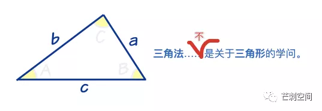

第一次听说蒙代尔不可能三角的时候，我还是个懵懂的少年，连讲述人说出这个词时“欲拒还迎”的炫耀感都没有看出来。幸好那个时候莫代尔材质还没有那么“风靡”淘宝，否则我大概率会一脸懵地看着讲台上正热心解释莫代尔为什么无法做成三角图片内裤的港中文美腻学姐。

后来，我不断地了解到各种三难问题。如果说两难问题让决策者处于困境，三难问题则让她们深陷暧昧（题外话，这里写她们会被微信判断为疑似错别字图片）。决策者的决策相对两难问题，变得简单了，悄然放弃最不重要的那一个，保住另外两个。这不会显得偏心。在两难之中，势力是均衡的，决策的主观色彩更浓。在三难之中，我们有了“讨论”的空间，真相或者说最优解处于暧昧之中。
惊呼！大维基百科居然整理得整整齐齐，但我也要装作原创。毕竟排名按我发现的顺序。
第一种：蒙代尔不可能三角
国际金融学中的原则，指一个国家不可能同时完成下列三者：资本自由进出（Capital mobility）、固定汇率（Exchange rate）、独立自主的货币政策（Monetary policy）。[摘自维基百科]
第二种：项目管理的三难
时间、质量、成本。
第三种：
Party-ship（请自己翻译）、诚实、智慧三者择其二。[摘自苏联笑话]
这种说法的另外一个名字是 齐泽克三难选择。
第四种：CAP原则
在一个分布式系统中， Consistency（一致性）、 Availability（可用性）、Partition tolerance（分区容错性），三者不可得兼。[摘自 NoSQL 笔记]
第五种：投资中的
收益、风险、流动性
第六种：当你想要剁手数码产品的时候
外观、性能、价格
em, 暂时记得六种，如果有别的三角关系，欢迎举例！
20210511 补充一种：招聘员工时不可能用便宜的工资招到能力强又稳定的员工。